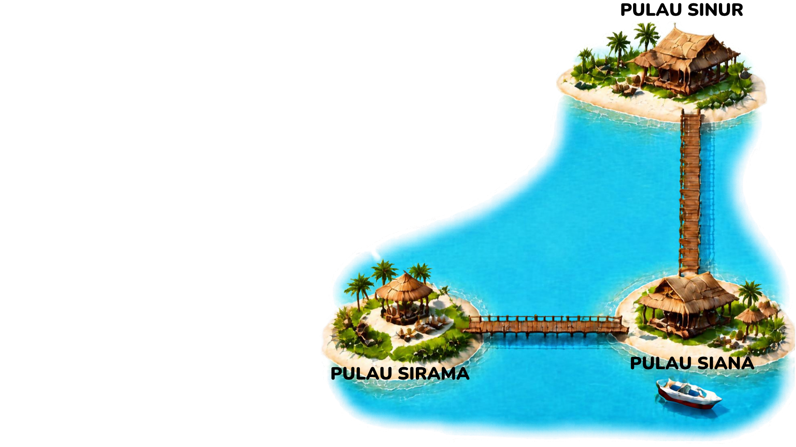

Ayo Membaca dan Berpikir!
Petualangan Tiga Pulau

Saat liburan sekolah, Farah pergi berwisata ke sebuah kawasan tiga pulau bersama keluarganya. Di sana
terdapat tiga pulau kecil, yaitu Pulau Siana, Sinur, dan Sirama. Masing-masing pulau dihubungkan oleh
jembatan kayu memanjang, kecuali dari Pulau Sinur ke Pulau Sirama.
Farah bermalam di Pulau Sinur. Namun, Dia melihat bahwa belum ada jembatan yang menghubungkan pulau
tersebut
dengan Pulau Sirama. Farah pun berpikir untuk membantu membangun jembatan agar penduduk setempat dan
pengunjung dapat menuju pulau tersebut dengan lebih mudah tanpa harus melewati Pulau Siana terlebih
dahulu.
Dari hasil pengamatannya, Farah mengetahui bahwa jembatan disusun dari balok kayu yang kira-kira memiliki
panjang 1 m dan lebar 30 cm. Balok-balok kayu tersebut ditata dengan sisi selebar 30 cm searah dengan
panjang jembatan. Dia menghitung bahwa jembatan dari Pulau Sinur ke Pulau Siana terdiri atas 150 balok
kayu,
sedangkan jembatan dari Pulau Siana ke Pulau Sirama terdiri atas 80 balok kayu. Kedua jembatan tersebut
bertemu di Pulau Siana dan membentuk sudut siku-siku.
Kemudian, Dia mencoba untuk berkomunikasi dengan penduduk setempat untuk mengusulkan sarannya agar dapat
dibangun jembatan yang menghubungkan Pulau Sinur ke Pulau Sirama. Ada salah satu penduduk yang bertanya,
“Kalau begitu, jika jembatan yang ingin dibangun menggunakan balok kayu dengan ukuran dan susunan yang
sama,
berapa banyak balok kayu yang dibutuhkan untuk membangun jembatan tersebut?”.
Farah masih bingung menjawabnya karena Dia belum mengetahui jarak antara Pulau Sinur ke Pulau Sirama.
Bantulah Farah untuk menghitung jarak kedua pulau tersebut dan menentukan banyaknya balok kayu yang
dibutuhkan untuk membangun jembatan itu!